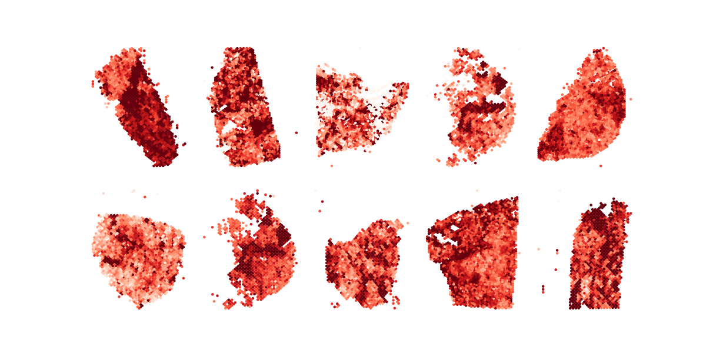
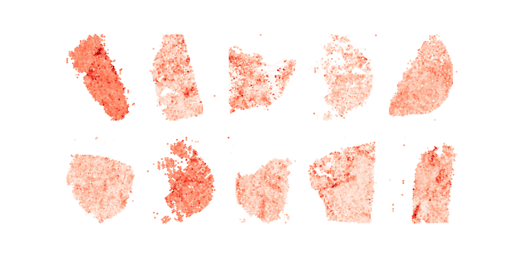
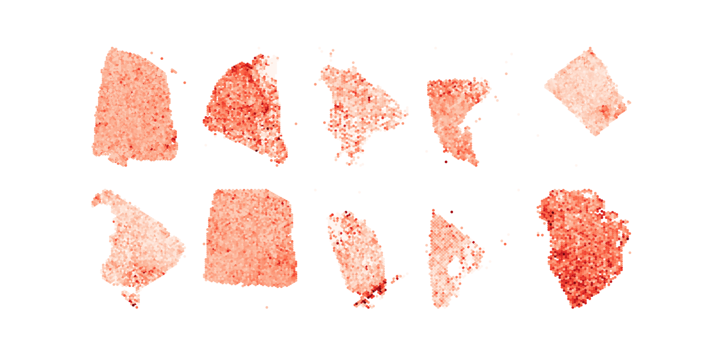

plot_one_across_tumor_nocbar
import sys
import os
import re
import numpy as np
import matplotlib as mpl
import matplotlib.pyplot as plt
import seaborn as sns
def read_coord(n):
f = open(n)
Xcen = []
cells = []
for l in f:
l = l.rstrip("\n")
ll = l.split(",")
cells.append(ll[0])
Xcen.append((float(ll[-2]), float(ll[-1])))
f.close()
Xcen2 = np.empty((len(Xcen), 2), dtype="float32")
for ind,(i,j) in enumerate(Xcen):
Xcen2[ind, :] = [j,-1.0*i]
Xcen = Xcen2
return Xcen, cells
def read_expression(n):
f = open(n)
h = f.readline().rstrip("\n").split()
h = [xh.replace(".", "-") for xh in h]
num_gene = 0
for l in f:
l = l.rstrip("\n")
num_gene+=1
f.close()
mat = np.empty((num_gene, len(h)), dtype="float32")
f = open(n)
f.readline()
ig = 0
genes = []
for l in f:
l = l.rstrip("\n")
ll = l.split()
gene = ll[0]
values = [float(v) for v in ll[1:]]
mat[ig,:] = values
genes.append(gene)
ig+=1
f.close()
return mat, h, genes
def read_list(n):
f = open(n)
m = []
for l in f:
l = l.rstrip("\n")
m.append(l)
f.close()
return m
def do_one_sample(sample):
#sample = sys.argv[1]
mat, cells, genes = read_expression("../../dir_%s/Giotto_norm_expr.txt" % sample)
Xcen, Xcells = read_coord("../../dir_%s/spatial/tissue_positions_list.csv" % sample)
map_cell = {}
for ic,c in enumerate(Xcells):
map_cell[c] = ic
good_cell_ind = np.array([map_cell[c] for c in cells])
Xcen = Xcen[good_cell_ind, :]
gene_lists = []
weights = []
gene_lists.append(("PTPRC", "VIM", "PECAM1", "AR", "FCGR3A", "FCGR3B", "CD68", "CD163"))
weights.append((1.0, 1.0, 1.0, 1.0, 0.17, 0.17, 0.33, 0.33))
gene_lists.append(("CTLA4", "CD8A", "CD4", "CD163", "CD68", "PTPRC", "HIF1A", "GZMB", "PLK1", "PDCD1", "CD274", "CD3E",\
"CD3D", "CD3G"))
weights.append((1.0, 1.0, 1.0, 0.5, 0.5, 1.0, 1.0, 1.0, 1.0, 1.0, 1.0, 0.3, 0.3, 0.3))
gene_lists.append(("MKI67", "CDH1", "VEGFA", "ITGAX", "FOXP3", "KIFC1", "KRT7", "KRT17", "KRT18", "KRT76", "KRT77"))
weights.append((1.0, 1.0, 1.0, 1.0, 1.0, 1.0, 0.2, 0.2, 0.2, 0.2, 0.2))
gene_lists.append(("MPO", "HIF1A", "GZMB", "CD68", "CTLA4", "ARG1"))
weights.append((1.0, 1.0, 1.0, 1.0, 1.0, 1.0))
gene_lists.append(("FOXP3", "CD4", "PECAM1", "KIFC1", "CDH1"))
weights.append((1.0, 1.0, 1.0, 1.0, 1.0))
gene_lists.append(("CD68", "CD163", "VIM", "PTPRC", "MS4A1", "PLK1"))
weights.append((0.5, 0.5, 1.0, 1.0, 1.0, 1.0))
gene_lists.append(("PECAM1", "FCGR3A", "FCGR3B", "CD68", "FOXP3", "CD4", "VIM", "PTPRC"))
weights.append((1.0, 0.25, 0.25, 0.5, 1.0, 1.0, 1.0, 1.0))
gene_lists.append(("FCGR3A", "FCGR3B", "CD163", "CD14", "VIM", "AR", "PLK1"))
weights.append((0.25, 0.25, 0.5, 1.0, 1.0, 1.0, 1.0))
map_gene = {}
for ig,g in enumerate(genes):
map_gene[g] = ig
averages = {}
for ig,aG in enumerate(gene_lists):
gene_ids = []
w_ids = []
for inx, gx in enumerate(aG):
if not gx in map_gene:
continue
gene_ids.append(map_gene[gx])
w_ids.append(inx)
w_ids = np.array(w_ids)
gene_ids = np.array(gene_ids)
t_weight = np.array(weights[ig])[w_ids]
avg = np.average(mat[gene_ids,:], weights=t_weight, axis=0)
averages[ig] = avg
return gene_lists, averages, Xcen
if __name__=="__main__":
#t_list = read_list("paper.ea.list")
t_list = read_list("paper.aa.list")
list_g, list_avg, list_Xcen = [], [], []
for gsm in t_list:
glists, averages, Xcen = do_one_sample(gsm)
list_g.append(glists)
list_avg.append(averages)
list_Xcen.append(Xcen)
dot_size = 5
ncol = 5
nrow = int(10 / ncol)
size_factor = 3
if 10%ncol>0:
nrow+=1
print(nrow, ncol)
f, axn = plt.subplots(nrow, ncol, figsize=(ncol * size_factor * 0.8, nrow * size_factor))
plt.subplots_adjust(hspace=0.1, wspace=0.1)
ct = 0
query_id = int(sys.argv[1]) - 1
for ind in range(10):
Xcen = list_Xcen[ind]
avg = list_avg[ind][query_id]
v1 = 0
#v2 = 1.5
v2 = 1.0
if ind==0 or ind==6:
avg += 0.2 #EA only
sc = axn.flat[ct].scatter(Xcen[:,0], Xcen[:,1], s=dot_size, c=avg, edgecolors=None, cmap="Reds", vmin=v1, vmax=v2)
axn.flat[ct].set_facecolor("white")
#f.colorbar(sc, ax=axn.flat[ct])
axn.flat[ct].axis("off")
ct+=1
#plt.savefig("all.EA.metagene.no.cbar.q%d.png" % (query_id+1))
plt.savefig("all.AA.metagene.no.cbar.q%d.png" % (query_id+1))Running Command
python3 plot_one_across_tumor_nocbar.py 2Results
  